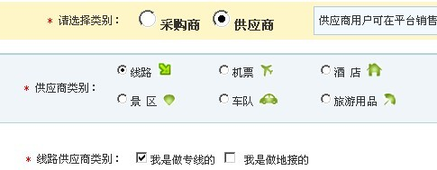
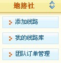

| 帮助中心首页 > 地接社指南 > 如何注册地接社 |
| 如何注册地接社 |
|
同业114平台注册选用统一的注册入口，方便您的操作，地接社用户注册时： 第一步：填写公司名称、用户ID及密码； 第二步：填写相关公司信息，需注意的是：地接社用户在选择“类别”时请选择“供应商”类别，再选择“线路”，最后勾选 “我是做专地接的”，即注册的用户类别为【地接社】用户了！  |
| 第三步：填写好相关信息后直接提交注册信息，即注册成功！ 注意的是地接社会员类型注册时候，请按照实际情况勾选产品销售地区和经营专线类型，该内容无法修改，需要电话联系我们客服方能修改。 |
|
注意事项：理论上可以同时为地接社和地接社，但是注意地接社的线路和地接社的线路管理和订单管理是分开的，管理上会多不少工作。
地接社独有功能  |
|
为保证平台的客户都是有效注册用户，需我们的客服人员人工审核！我们会在提交注册24小时内联系您。 如需快速审核通过，请拨打电话：0571-56884627 |